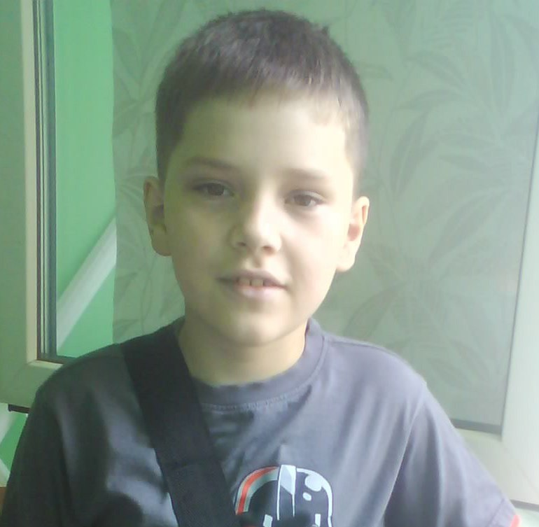

Experience:
Web Devloper - Web Designer
Objective:
To obtain a position as a Web Designer where I can utilize my skills and experience to create visually appealing and
user-friendly websites that meet the needs of clients.
Skills:
- Proficient in Adobe Creative Suite (Photoshop, Illustrator, InDesign)
- Strong understanding of HTML, CSS, and JavaScript
- Experience with WordPress and other content management systems
- Knowledge of responsive design and mobile-first development
- Familiarity with SEO and web analytics
- Excellent communication and collaboration skills
Experience:
Web Designer, XYZ Company, 2018-Present
- Designed and developed responsive websites for clients in a variety of industries, including healthcare, finance, and e-commerce
- Worked closely with clients to understand their needs and preferences, and incorporated their feedback throughout the design process
- Collaborated with developers and other designers to ensure that websites were functional, user-friendly, and visually appealing
- Conducted usability testing and made adjustments based on user feedback
Freelance Web Designer, 2016-2018
- Designed and developed websites for small businesses and individuals
- Communicated with clients to determine their needs and preferences, and delivered websites that met their expectations
- Created custom graphics and illustrations to enhance website designs
- Optimized websites for search engines and tracked web analytics to improve performance